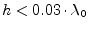
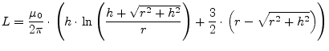
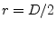
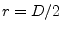
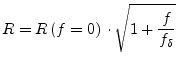
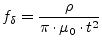
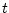

According to Marc E. Goldfarb and Robert A. Pucel [45] a via hole ground in microstrip is a series of a resistance and an inductance. The given model for a cylindrical via hole has been verified numerically and experimentally for a range of .
|  | (11.232) |
whence  is the via length (substrate height) and  the
via's radius.
is the via length (substrate height) and  the
via's radius.
|  | (11.233) |
|  | (11.234) |
The relationship for the via resistance can be used as a close
approximation and is valid independent of the ratio of the
metalization thickness  to the skin depth. In the formula  denotes the specific resistance of the conductor material.
denotes the specific resistance of the conductor material.